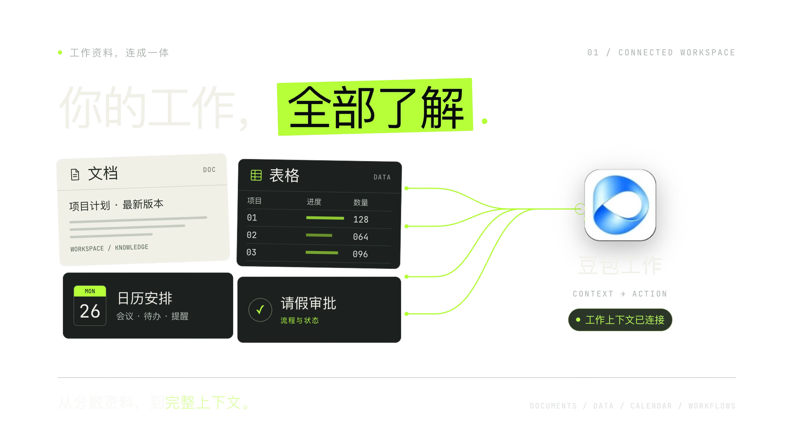

03 / READY TO CREATE
下一条，开始。
HYPER STUDIO
镜头有重点。动作有节奏。FROM MATERIAL TO MOTION
02 / THE EDIT
让每一拍，都有重点。

01 建立画面
02 推进重点
03 留出停顿
00:00 / BUILDFOCUSHOLD / 00:12
HYPER STUDIO / MOTION STUDY 01

FROM MATERIAL TO MOTION
让素材，成为镜头。
REAL OUTPUT / AGENT UI FILM
真实素材 × 镜头编排 × 声音节奏12 SEC / 1920 × 1080